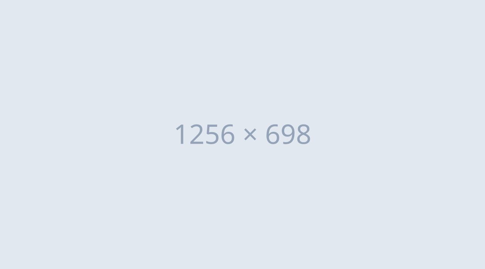
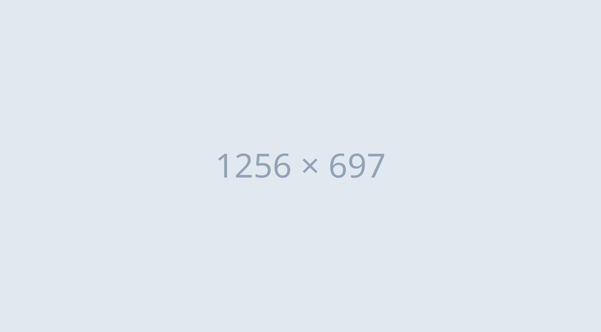
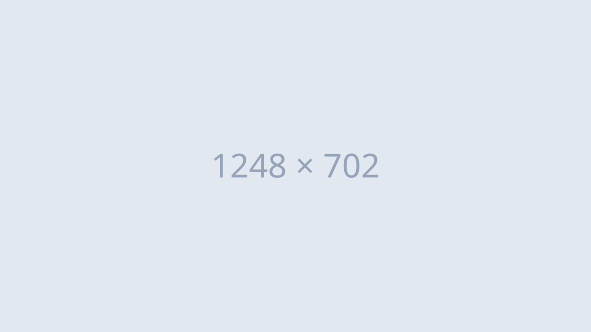

Latest Forty versions of one glass: lighting notes from Halo Drift The glass ring in Halo Drift took forty versions to get right. Here is what changed between version one and forty, and the three lighting rules I would use again tomorrow.Blog
Notes from the studio, written between renders.
Lighting notes, loops, process and the odd confession, about once a month. No growth hacks, no tool reviews.
6 NotesMonthly Studio Notes
The latest note
More notes
 Loops that don't feel like loops, and the three rules behind them
Loops that don't feel like loops, and the three rules behind them

Why every product film I make starts with a single still
A year in the Kreuzberg loft, and what a quiet room did for the workStudio Notes, once a month.
The new note and three experiments from the Playground. No tracking pixels, unsubscribe in one click.